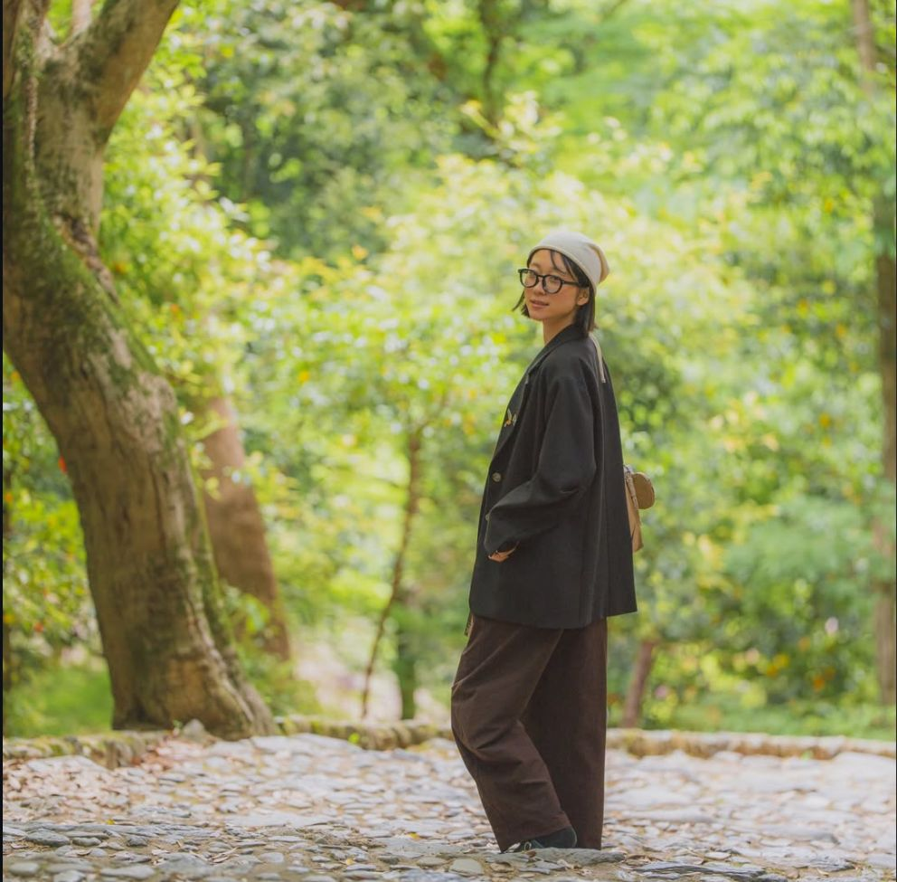

We agree on a neighbourhood and a time of day, then walk it together while I photograph. Pick a session by how long you want it to run.
Half an hour in one place: a lane in Gion, or the bamboo and the river at Arashiyama. The shortest session.
¥6,00020 photos
Forty minutes, long enough to walk between two spots rather than stay in one.
¥8,00030 photos
A full hour. The most photographs, and enough time to wait for the light instead of chasing it.
¥10,00060 photos
The price is the same whether you come alone or as a pair. Anywhere in Kansai, not only Kyoto.

The riverbank. People sit spaced evenly apart along the water and forget completely that anyone can see them.
Pick a place on the map
Tell me the days you are in Kyoto and where you would like to walk. I answer within a day.
On a street corner, not in a studio. We start walking. There is no setup and there are no instructions.
The photographs come back to you in a private gallery. Nothing is posted publicly unless you tell me it can be.
Only if you want to. Some people would rather just walk and be photographed as they go; others want a few proper portraits. Both are fine, and most sessions end up being a mix. Tell me which you prefer beforehand.
Kyoto in the rain is Kyoto at its best, so we shoot anyway. In a typhoon we move the date at no cost.
Of course. If you would rather not decide, I will propose a route built around the hour and the light.
Not one frame without your permission, which I ask for when you book and never assume.
Osaka, Nara and Kobe for the cost of the train. Further than that, write to me and we will work it out.
Not the ceremony itself, but the hours around it: getting ready, the walk between places, the quiet after everyone leaves.
You will have an answer, with real availability, within a day.
Make an enquiry